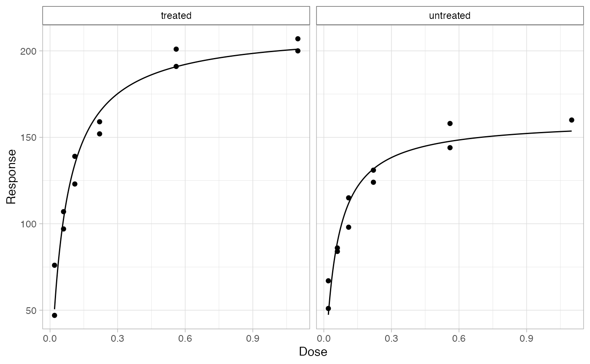

This function fits a Michaelis-Menton model to the dose-response data of
enzymatic reactions. By default the minimum rate is locked to 0, if you wish
to let the function find the minimum (if enzyme rate is > 0 at concentration
0) then supply the min = NA or manually set it i.e. min = 2.5.
bio_enzyme_rate(data, conc, rate, group = NULL, min = 0)Data frame with columns for concentration, reaction rate and optionally grouping information.
Column containing the concentration data.
Column containing the enzyme rate data.
Minimum value of enzyme rate. Defaults to 0, as if there is 0
substrate there should be no enzymatic activity in a properly blanked
experiment. Set to NA to allow the model to fit the minimum value.
tibble with nested list columns of data, model, predictions,
residuals and coefficients.
# Fitting MM curves to the enzymatic data inside of datasets::Puromycin
library(bicohemr)
#> Error in library(bicohemr): there is no package called ‘bicohemr’
df <- Puromycin %>%
bio_enzyme_rate(conc, rate, state)
# the result is a tibble with a column for the data, a column for the
# calculated # model and a column for the relevant coefficients extracted from
# the model
df
#> # A tibble: 2 × 4
#> state data model coefs
#> <fct> <list> <list> <list>
#> 1 treated <tibble [12 × 2]> <drc> <tibble [2 × 5]>
#> 2 untreated <tibble [11 × 2]> <drc> <tibble [2 × 5]>
# you can extract the coefficient data using either `bio_coefs()` or
# `unnest()` on the column
bio_coefs(df)
#> # A tibble: 4 × 6
#> state term estimate std.error statistic p.value
#> <fct> <chr> <dbl> <dbl> <dbl> <dbl>
#> 1 treated Vmax 213. 7.16 29.7 4.37e-11
#> 2 treated Km 0.0641 0.00871 7.36 2.42e- 5
#> 3 untreated Vmax 160. 6.81 23.5 2.14e- 9
#> 4 untreated Km 0.0477 0.00842 5.67 3.07e- 4
tidyr::unnest(df, coefs)
#> # A tibble: 4 × 8
#> state data model term estimate std.error statistic p.value
#> <fct> <list> <list> <chr> <dbl> <dbl> <dbl> <dbl>
#> 1 treated <tibble [12 × 2]> <drc> Vmax 213. 7.16 29.7 4.37e-11
#> 2 treated <tibble [12 × 2]> <drc> Km 0.0641 0.00871 7.36 2.42e- 5
#> 3 untreated <tibble [11 × 2]> <drc> Vmax 160. 6.81 23.5 2.14e- 9
#> 4 untreated <tibble [11 × 2]> <drc> Km 0.0477 0.00842 5.67 3.07e- 4
# quick plot can be made for inspecing the results with `bio_plot()`
df %>%
bio_plot()
